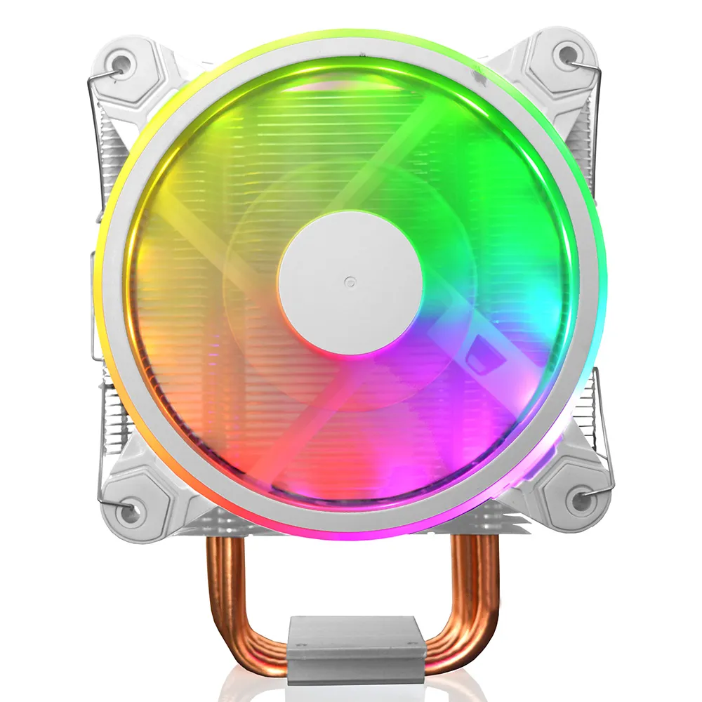

o cooler protege as peças componentes evitando que “fritem” em um ambiente de temperatura elevada.


O que é?
Hardware é todo e qualquer componente ou equipamento físico, tanto dentro quanto fora da
Tecnologia da Informação. De uma maneira geral, qualquer máquina, ferramenta ou utensílio,
de uma máquina de fresa a uma chave-inglesa, passando pelo seu celular ou computador é um
hardware. Talheres, peças, dobradiças, engrenagens, parafusos, chips, processadores, tudo isso
é hardware.
Em Tecnologia da Informação, o conceito se aplica aos componentes de dispositivos em geral,
como processador, placa-mãe, memória RAM, unidades de armazenamento (HDs, SSDs e memória Flash),
bem como a dispositivos de entrada e saída (teclado, mouse, monitor, caixas de som, controle remoto,
controle de videogame, etc).
Em geral, o termo é usado para se referir aos componentes internos de um computador, celular, tablet e outros dispositivos. Eles precisam de softwares para serem operados, mas são elementos distintos. Sobre isso, uma antiga piada em TI separa bem o software do hardware: “software é o que você xinga. Hardware é o que você chuta”.
| ICONE | NOME | DESCRICAO |
|---|---|---|
|  | Negrito | Além de permitir que o PC trabalhe melhor, sem erros ou queda de rendimentos, o cooler protege as peças componentes evitando que “fritem” em um ambiente de temperatura elevada. |
| | o Disco rígido (HD) | O disco rígido — HD (Hard Disk) ou HDD (Hard Disk Drive) — é o dispositivo de armazenamento de dados mais utilizado nos computadores. Esse tipo de equipamento guarda desde os seus arquivos pessoais até informações utilizadas exclusivamente pelo sistema operacional. |
| | Drives | De forma simples, o driver é um pequeno programa que permite que o sistema operacional do computador possa se comunicar com o dispositivo conectado a ele. Basicamente faz com que um mouse, uma impressora e outros componentes possam ser interpretados pelo sistema e realizem suas ações da forma correta. |
| | Fontes | Como o próprio nome sugere, a fonte de alimentação é o componente de onde surge a energia necessária para que as demais peças do computador funcionem. Até aí nenhum segredo. É possível ainda que você tenha uma noção de que a fonte de alimentação desenvolve o importante papel de transformação da energia. |
| | Memória RAM | A memória RAM é responsável pelo armazenamento de informações necessárias para a execução de aplicativos em uso e para o funcionamento do próprio sistema operacional. Essa peça, inclusive, facilita o trabalho do processador que pode acessar os dados essenciais mais rapidamente. |
| | Placa de vídeo | As placas de vídeo são itens de hardware responsáveis pela geração das imagens que são exibidas na tela do computador (incluindo videogames, smartphones, etc). |
| | Placas de som | Placa de som é um dispositivo de hardware que envia e recebe sinais sonoros entre equipamentos de som e um computador executando um processo de conversão entre a forma digital e analógica para outros periféricos como fones de ouvido ou provendo interfaces para outros equipamentos digitais. |
| | Placas-mãe | A placa-mãe abriga processador, memória RAM e outros componentes por meio de conexões padronizadas. |
| | Processadores | O processador, também chamado de CPU (central processing unit), é o componente de hardware responsável por processar dados e transformar em informação. Ele também transmite estas informações para a placa mãe, que por sua vez as transmite para onde é necessário (como o monitor, impressora, outros dispositivos). |
| | Rede Wired (com fio) | Rede de computadores que utiliza de fios e cabos para se conectar e compartilhar dados, software, etc, com outros computadores. Apesar de suas diferenças, tanto a rede cabeada quanto a wireless oferecem vantagens interessantes aos usuários. |
| | Rede Wireless (sem fio) | Rede wireless nada mais é do que uma rede sem fio, trata-se de uma rede que transmite informações para um ou mais dispositivos sem usar nenhum tipo de cabo. |
| | SSD | O SSD (Solid State Drive ou unidade em estado sólido) é um componente de hardware que substitui o antigo HD (Hard Disk ou disco rígido) como unidade de armazenamento de dados nos PCs. Muito mais rápido, o SSD não possui discos físicos ou agulhas magnéticas, sendo capaz de acessar dados em uma fração de segundo e tornar seu computador mais ágil para abrir programas e executar tarefas. |
| | Switch KVM | Switch KVM ou Chaveador KVM (abreviatura do inglês de: "Keyboard, Video and Mouse", tradução: teclado, monitor e mouse) é um dispositivo de hardware que permite ao usuário controlar vários computadores usando somente um teclado, monitor e mouse. |